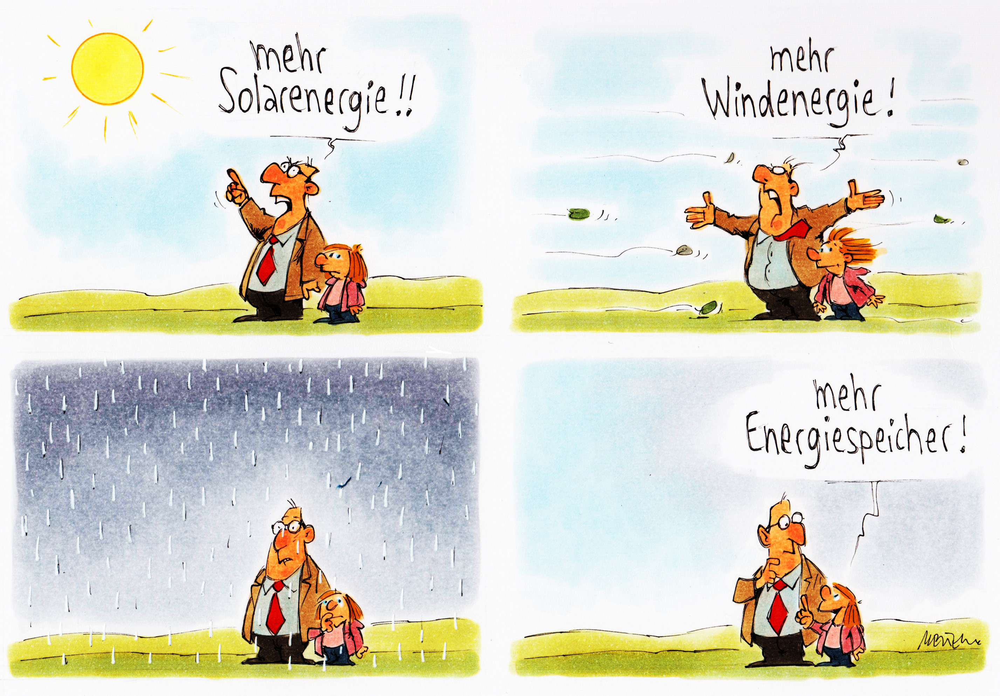

In 2015 the International Energy Agency (IEA) welcomed the landmark Paris Agreement with the quote, “The Paris Agreement is nothing less than a historic milestone for the global energy sector. It will speed up the transformation of the energy sector by accelerating investments in cleaner technologies and energy efficiency.” The IEA should know: the organization estimates that the energy sector is the single largest emitter of greenhouse gases (GHG), accounting for three quarters of all GHG emissions globally. Meeting climate targets requires that 70 % of global electricity generation come from wind and solar combined according to the IEA 2050 zero emissions scenario. Fortunately, we have seen unprecedented growth in both solar and wind energy in recent years, reaching 12% of global electricity generation in 2022. But the sun does not always shine and the wind does not always blow. Some worry that overreliance on renewable energy sources, which are intermittent in nature, will cause grid reliability problems.
Dunkelflaute, a German word that translates to “dark doldrums”, describes a period of simultaneous reduction in wind and solar power generation. This period typically occurs during the winter months when there is less sunlight and low wind. Renewable energy sources do not produce sufficient electricity during a Dunkelflaute, and this poses challenges to balance the grid and effectively respond to energy demands. Though the occurrence of these conditions is rare, usually five consecutive days once a year, the damage can be significant. In February 2021, the Texas grid experienced a major power outage during a winter storm. Power plants across the state failed to operate in the extreme cold temperatures, leaving more than 10 million people without electricity at the peak of the winter storm, with some enduring several days without power. Services dependent on electricity such as drinking water treatment and medical services were affected as well. More than 200 people died directly or indirectly as a result of the crisis. Even though this event was not caused by the intermittent nature of renewable energy generation, it provides an example of what could happen when a grid is not able to meet energy demand when it is needed the most. Still, there are rays of hope in potential solutions.
Not all gloom Researchers from the Delft University of Technology identified possible solutions to mitigate Dunkelflaute’s effect on energy demand supply. The research suggests that meteorological conditions are not necessarily the same across all European countries. This allows countries to optimize energy supply lines with each other. For instance, when there is low solar radiation and still weather in Northern Germany, the South of France might experience sunny and windy conditions. Tight coordination between the two countries would allow France to divert excess energy from its grid to Germany.

Other methods to mitigate the effects of low energy production due to prolonged unfavorable meteorological conditions are available or under investigation. Utility-scale energy storage, such as lithium-ion battery installations and salt caverns, can help in balancing the grid during periods of high demand and low energy production. Salt caverns, large underground salt deposits, can be used as hydrogen holding tanks according to the researchers at the University of Texas at Austin’s Bureau of Economic Geology. These energy banks can be used to store energy during the periods of low demand and release it during high demand when energy production is insufficient. Direct-current-type ultra-high-voltage (UHVDC) transmission lines for global energy transition and climate change is another solution that promises to distribute renewable energy to where it is needed the most.
While the transition to renewable energy sources poses its challenges, the benefits are undeniable: cleaner air, reduced levels of pollution, decrease in GHG emissions, and more equitable energy distribution warrant more innovation to ensure grid reliability. Advancements in energy storage, demand management, and meteorological forecasting will enable grid operators to transition to green energy sources. However, it is crucial to recognize that urgent action is needed to ensure that utilities are well-prepared for this transition without compromising the wellbeing of their customers.
Citation
@online{protsukha2023,
author = {Protsukha, Oksana},
title = {Powering {Through} the {Dark:} {Dunkelflaute} and {Grid}
{Resilience}},
date = {2023-12-08},
url = {https://oksanaprotsukha.github.io/portfolio/projects/2023-11-06-my-first-post.html},
langid = {en}
}